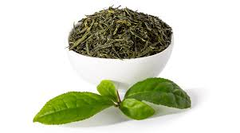
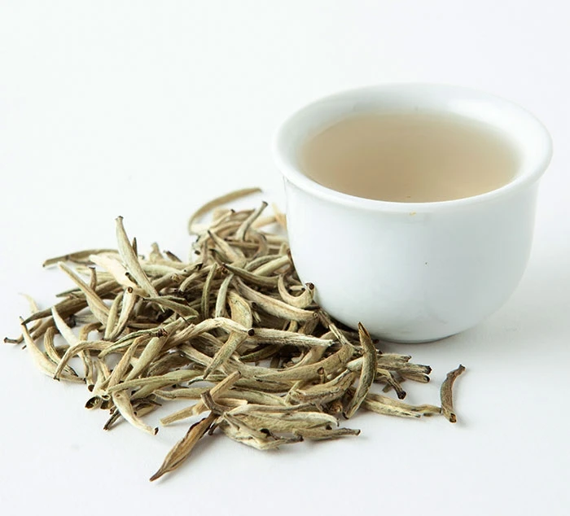
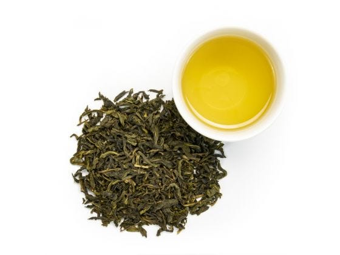
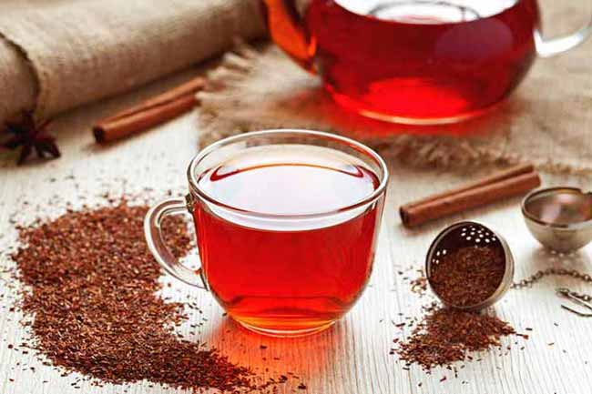
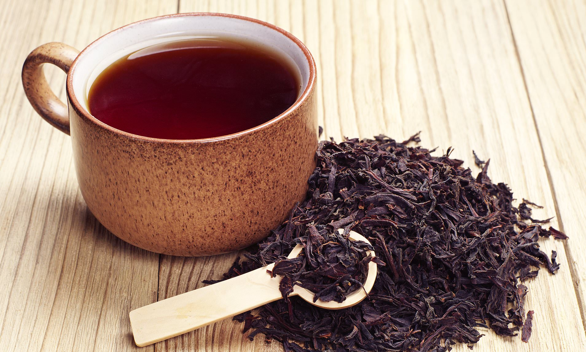
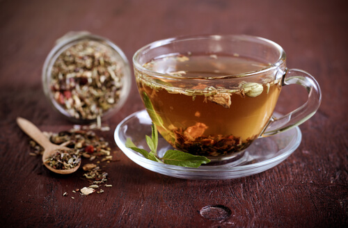

Six different forms of tea can be extracted from one tea plant: green tea, yellow tea, white tea, oolong tea, black tea and after-fermented tea. Each type of tea may be broken down further by the type of tea, by the cultivar, or even the purpose of the tea maker – which can benefit from changes to the treatment process. All different types tea come from the same herb, Camellia Sinensis. The variations between teas emerge from production, growing conditions, and geography. The Camellia Sinensis plant, which comes from Asia, is currently grown in tropical and subtropical conditions around the world.
For example, the method for making black tea is characterized by allowing the leaf to oxidize completely during processing (meaning water evaporates from the leaves and absorbs more air oxygen). The findings are usually dark-brown and black leaves with more sturdy and pronounced aromas.
Any tea begins green. The method of green tea is characterized by oxidation prevention. Shortly after processing, the leaves (rapid heating) are "fired" in a manner that prevents oxidation and preserves the leaf "green." Green teas are typically steeped at lower temperatures for a longer period of time, creating a lighter cup of less caffeine.
Oolong teas are loosely described as any partially oxidized tea (10-90%). "Baking" is also a popular technique for oolong tea making, so categorical resume is unlikely. Rather than anything else, the regional types and cultivars used seem to characterize them.
White tea is made by limited processing. No-pan shooting, no rolling – it is the most convenient way to describe white tea. The sheets are selected, then dried carefully and methodically. Although the leaves are not formed by the rolling, the finished product is not pan-fired and so any by-product oxidation is occurring.
| Type of tea | Image | Cost/50g | Benifits |
|---|---|---|---|
| Green tea |  | LKR.800 |
|
| White tea |  | LKR.4368.76 |
|
| Oolong tea |  | LKR.2420 |
|
| Rooibos tea |  | LKR.1000 |
|
| Black tea |  | LKR.1000 |
|
| Herbal tea |  | LKR.1100 |
|